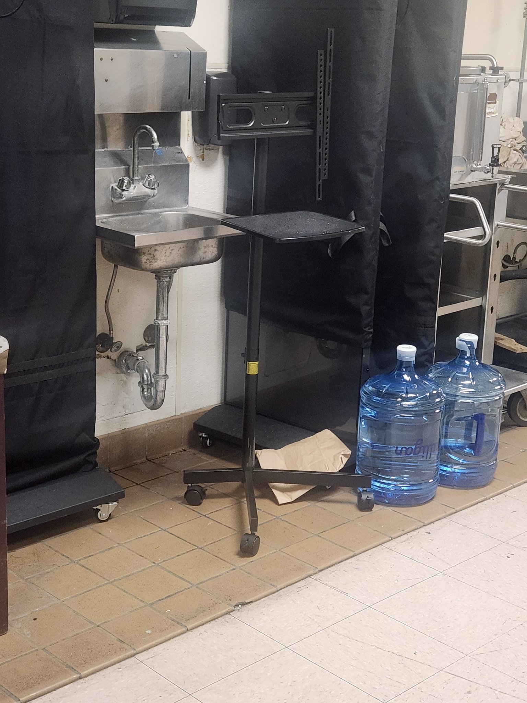

The System · The work layer
A desk that goes anywhere.
The universal travel standing desk. Small enough to travel, tough enough for a hotel back-of-house, and open enough for anyone to build.
Work happens where life happens: hotel rooms, backstage corners, campsites, small apartments. The desk should be able to show up in all of them, on wheels, in minutes, without a fight.

Reference 1
Spotted in the wild.
Design research happens on shift, too.
This rolling stand lives back of house at the Manchester Grand Hyatt, where it holds monitors and AV gear through banquets and balls. It is, technically, a monitor stand. Thomas spotted it during the Navy Ball shift on November 6, 2026, and said the line that started this page: "This desk looks cool for our universal travel standing desk."
He was right. The silhouette is the idea. Most desks are a table you arrange your life around. This is a tool that appears when you need it and disappears into a corner when you do not.
The good parts
What we are stealing.
Not the object. The decisions inside the object.
- One central poleNothing else in the way of your legs or feet. You can stand close, shift, perch, move.
- Low cross base on small castersRolls anywhere, tucks flat against a wall, and stays out of the way when parked.
- A laptop-sized trayJust enough surface for the work, nothing wasted. Constraint is a feature: the desk cannot become a junk shelf.
- A mount plate up topThis one holds a screen bracket. On ours, that is where a bigger surface, a monitor arm, or a second tray bolts on. Expansion by bolts, not by buying a bigger desk.
- Hotel-grade toughnessAll black, all metal, built to survive banquet staff nightly. If it survives that, it survives travel.
Undecided, on purpose
Open questions.
These are Thomas's calls to make. They stay open until he makes them.
- Height adjustmentFixed pole, telescoping, or crank? Standing height is personal, and travel weight is real.
- Tray tiltDoes the top tray tilt for laptop use, or stay flat and simple?
- Pack-flat breakdownDoes the pole separate from the base so the whole desk packs flat for travel?
- Weight targetWhat is it allowed to weigh if it is meant to fly in checked luggage?
Family
The desk has two lives.
One inside the backpack. One on its own wheels.
A standing desk already exists as a mode of the Portable Room Backpack, where a telescoping frame unfolds into a work surface wherever you arrive. This page is the desk grown up into its own module: the same job, standing on its own base, for rooms where the backpack stays packed.
Status, honestly: one reference photo and a page of notes. No prototype yet. When there is one, its full recipe gets published like everything else here, under the Open Object Standard.